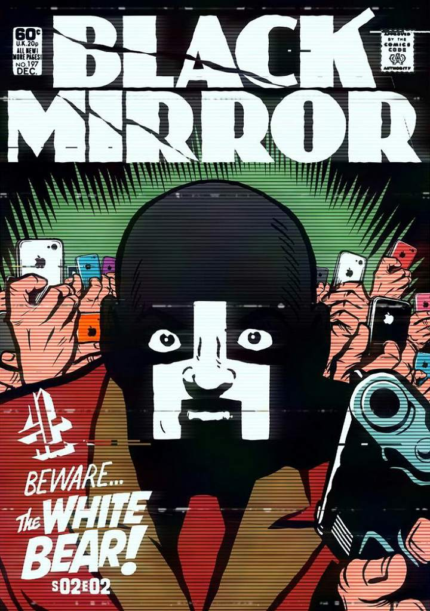
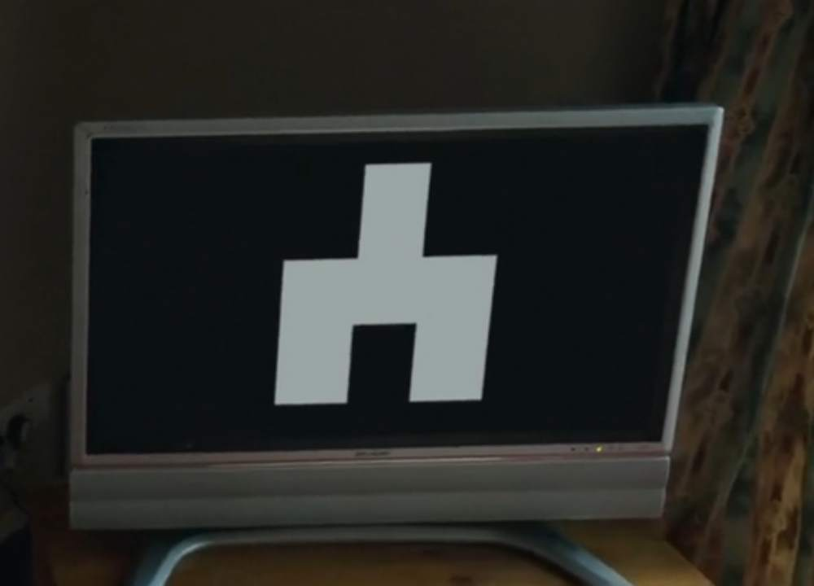
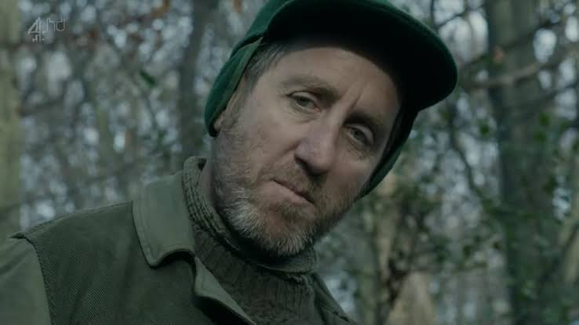

#PareOSinal
Uma mulher (Lenora Crichlow) acorda com amnésia em uma casa onde telas de TV exibem um símbolo desconhecido. Ela é perseguida por um homem mascarado, enquanto transeuntes a filmam passivamente.
Ela encontra Jem (Tuppence Middleton), que explica que um sinal transformou a maioria das pessoas em "onlookers" (espectadores passivos) e os não afetados em "caçadores" sádicos. Elas tentam destruir um transmissor em "Urso Branco".
No clímax, a mulher descobre que tudo é uma encenação: ela é Victoria Skillane, cúmplice de um assassino de crianças, e está em um parque temático de justiça, onde sua memória é apagada diariamente para que sua punição seja repetida como entretenimento público.

O símbolo do Urso Branco (um "t” invertido) é um dos easter eggs mais proeminentes da série, representando controle governamental e perda de escolha. Aparece em "Natal”, "Playtest”, Bandersnatch, "Museu Negro”, "Além do Mar” e "Demônio 79”.

Victoria Skillane é mencionada em "Calado e Dance” e "Natal”.
Um pôster de The White Bear aparece em "Hotel Reverie”.
O nome "Skillane IV” em "USS Callister” é uma referência a Victoria Skillane.
"Urso Branco é uma crítica contundente à cultura do vigilantismo e à sede de vingança da sociedade, amplificada pela mídia e pela tecnologia.
A punição perpétua de Victoria, embora ela seja culpada, levanta questões éticas sobre a justiça e a desumanização, especialmente quando a memória é apagada, tornando a punição sem propósito para a vítima.
O episódio explora como a tecnologia, mesmo em sua forma mais simples (celulares para filmar), pode transformar as pessoas em consumidores passivos de sofrimento alheio, questionando a que ponto a sociedade pode assistir ao horror antes de se tornar cúmplice.
A reviravolta final, que choca o público, serve para implicar o próprio espectador, que, assim como os "onlookers" na tela, consome a dor alheia como entretenimento. A presença do símbolo do Urso Branco em vários episódios posteriores sugere uma organização secreta que exerce poder e controle, manipulando a realidade e a percepção, e que a ilusão de livre-arbítrio é uma constante no universo Black Mirror.
Victoria Skillane (Lenora Crichlow): A protagonista que sofre uma punição cíclica por seus crimes.
Jem (Tuppence Middleton): A aliada inicial de Victoria, que se revela uma atriz.

Baxter (Michael Smiley): O mestre de cerimônias do parque de justiça.
❝Você pode me ajudar? Você sabe quem eu sou? Eu não consigo lembrar quem eu sou.
— Victoria
As primeiras falas de Victoria, estabelecendo sua amnésia.
❝Ele está tentando me matar! O que está acontecendo?... O que há de errado com essas pessoas?! Por que elas não estão nos ajudando? Elas estão apenas assistindo!
— Victoria
Aterrorizada, Victoria confronta a passividade dos "onlookers".
❝Acho que você está se perguntando por que está aqui? Bem, é hora de lhe dizer quem você é. Você já esteve melhor. Você o reconhece? Seu noivo, Iain Rannoch. Ou, devo dizer, era seu noivo. Caso você não tenha adivinhado, vocês dois não são muito populares. Mas vou te dizer o que você é. Você é famosa...
— Baxter
A revelação da identidade de Victoria e o motivo de sua punição.
❝Me mate. Por favor, apenas me mate.
— Victoria
O desespero de Victoria.
❝Isso é o que você sempre diz. Você teve um dia ruim, mas isso vai limpar tudo. Vai te deixar no clima para começar de novo. Leva cerca de 30 minutos para fazer o trabalho completo. Então, enquanto isso, por que não assistimos a um entretenimento de bordo? Você vai gostar. Você filmou.
— Baxter
A explicação arrepiante do ciclo de punição.
Data de Estreia:
18 Fev 2013
Duração:
42:44
Escritor:
Charlie Brooker
Diretor:
Carl Tibbetts